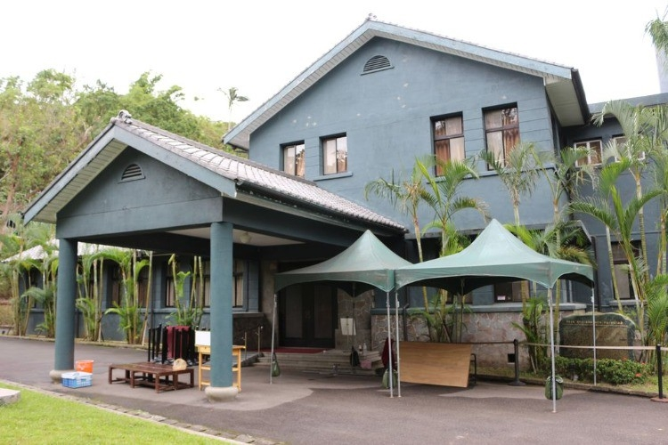

士林站、北投站

士林官邸
士林官邸有精緻的庭園造景設計，蟲鳴鳥叫、景色秀麗，是休閒遊憩的絕佳場所。當年因為緊鄰著中山北路，佔據極佳的地理位置，可快速直達總統府，加上後有福山做為倚靠，優越的地勢，所以成為蔣故總統官邸。官邸公園周圍為福山山系所環抱，佔地9.28公頃。其中的士林官邸於民國三十九年因先總統蔣公居住於此而設立。
官邸公園主要分為外花園、內花園、正房、栽種蘭花的溫室盆栽區、玫瑰園、凱歌堂、新蘭亭和慈雲亭。其中內花園屬中式庭園，其中有曲折的小橋流水、假山、奇石及一座紅色的中式涼亭。外花園區為西式庭園，區內設計成毛氈花壇，廣植花卉，美不勝收，是每年辦理菊展的主題園區。玫瑰園，育有200餘玫瑰品種，4,000多株玫瑰，盛開期在每年的11月至翌年4月間。
開放時間:週一休館，週二至週日09:00 - 12:00、13:30 - 17:00。
地址:臺北市士林區福林路60號。
門票:100元

周氏節孝坊
周氏節孝坊為一座建於臺灣清治時期牌坊，位於臺北市北投區。牌坊的設立是為了表彰早年喪夫守節撫孤的周氏絹，由閩浙總督劉珂在1850年題准建坊，牌坊建成於1861年。
周氏絹的生卒年為1788年至1846年，其早年即喪夫，由於其忠貞的操守與侍奉公婆的孝行，在周氏去世後，由官方建立了牌坊以紀念其人。周氏節孝坊的格局為“四柱三間坊”，高度約兩層樓高。最上層有聖旨碑與刻有“天旌節孝”的橫樑。牌坊的建材取自當地的青灰色觀音石，其硬度較高，較不易受風化侵蝕。牌坊兩側的對聯為“人將石化天以石旌；修史入烈女傳顏不汗紅；讀詩至共薑萹心堪邛白；翁固冰清母尤冰潔。”周氏節孝坊在1897年的地震中部分倒塌，臺北市政府1985年將其指定為三級古跡，在1992年將其修復。
開放時間:24小時。
地址: 新北市北投區豐年路一段36號前